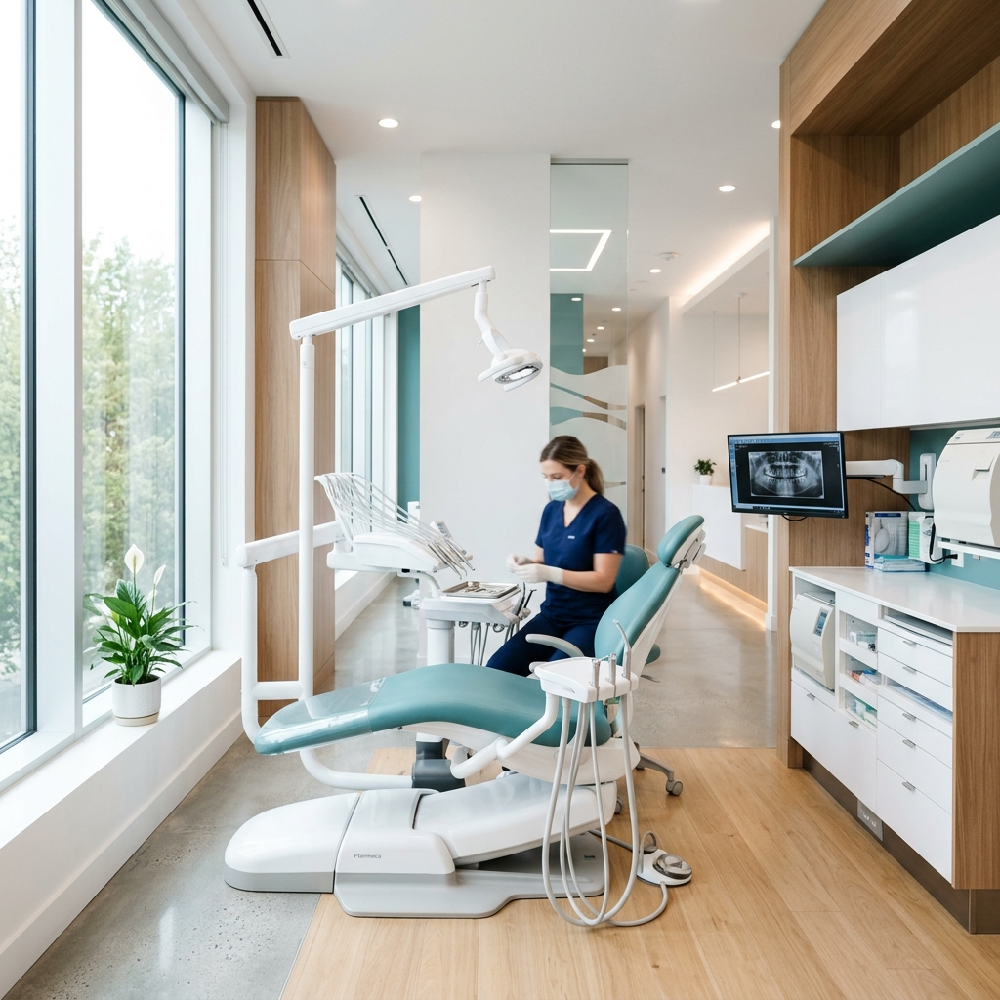

完全予約制・最新設備完備
スマイル歯科クリニック

WORRY
歯医者が怖くて・痛くてずっと行けていない
歯の色が気になって思い切り笑えない
虫歯・歯周病が心配で早めに診てほしい
歯並びが悪く矯正を検討中だが何から始めればいいか分からない
欠けた・抜けた歯を自然な見た目で補いたい
口臭が気になって人と会話するのが不安
OUR STRENGTHS
表面麻酔＋電動注射器の組み合わせで、麻酔の注射の痛みを最大限に軽減。「痛い歯医者」はもう終わりです。
口腔内3Dスキャナー・マイクロスコープ・歯科用CTを完備。精密な診断と治療で、長持ちする歯を実現します。
女性の院長・歯科医師が在籍。音や匂いが漏れない完全個室のユニットで、プライバシーを守りながら安心して治療を受けられます。
子ども専用のキッズルームと、バリアフリー構造を完備。0歳から対応可能な小児歯科から入れ歯まで、家族全員のかかりつけ医として対応します。
院長
DOCTOR
歯科医師 / 審美歯科認定医
「治療だけでなく、笑顔の自信を取り戻すお手伝いをしたい。」
京都大学歯学部卒業後、大学病院にて口腔外科・矯正歯科を専門に研鑽を積む。2014年に開院。インビザライン認定医、審美歯科認定医として、機能性と美しさを両立した治療に定評があります。
MENU
痛みを最小限に抑えた虫歯治療・歯周病治療。削らない・抜かない治療を最大限追求します。
保険診療適用
オフィスホワイトニング（1回で効果実感）とホームホワイトニング（自宅でじっくり）の2種から選べます。
¥22,000〜（税込）
目立たないマウスピース矯正。食事中は外せて、ワイヤーなしで生活しながら歯並びを整えます。
¥550,000〜（税込）
入れ歯・ブリッジに代わる最新の歯の再現技術。天然歯に近い噛み心地と審美性を実現します。
¥330,000〜（税込）
金属を使わない、透明感のある白いセラミック修復。見た目も機能性も妥協しません。
¥55,000〜（税込）
お子様のペースに合わせた「怖くない」歯科治療。フッ素塗布や予防ケアで虫歯ゼロを目指します。
保険診療適用
WHITENING
当院のホワイトニングは最新機器を使用し、歯へのダメージを最小限に抑えながら高いホワイトニング効果を発揮します。初めての方でも安心の徹底カウンセリングで理想の白さに近づきます。
REVIEW
「歯医者が大の苦手でしたが、先生がとても丁寧に説明してくれて、全然怖くなかったです。痛みもほとんどなく、こんな歯医者さんがあったんだと感動しました！」
「インビザラインでの矯正をお願いしました。1年半かけてきれいな歯並びになり、人生変わったと思っています。進捗の報告も丁寧で信頼できました。」
「ホワイトニングを受けました。2段階明るくなり、写真を撮る時に自信を持って笑えるようになりました。スタッフの方もみんな親切で通いやすいです。」
FAQ
はい、歯科恐怖症の方も多くご来院いただいています。まずは治療なしのカウンセリングのみのご予約が可能です。表面麻酔や電動注射器による無痛麻酔、笑気ガス（リラクゼーション）など様々な方法で、安心して治療を受けていただけるよう最大限配慮します。
インビザラインは永久歯が生え揃った12〜13歳以降の方から対応可能です（「インビザライン・ファースト」の場合はより低年齢でも対応可）。年齢の上限はなく、成人の方でも多くの方が治療中です。まずは無料カウンセリングでご相談ください。
オフィスホワイトニング後24〜48時間は、コーヒー・赤ワイン・カレーなど着色しやすい食べ物・飲み物はお控えください。ホームホワイトニングは就寝前に装着するタイプのため、日中の生活への影響はほぼありません。
もちろんです！0歳からの乳歯ケアにも対応しています。子ども専用の歯ブラシ指導・フッ素塗布・シーラント処置など、虫歯予防に力を入れています。キッズルームも完備しているので、小さなお子様連れでも安心してお越しください。
はい。土曜日：9:00〜18:00、日曜日：10:00〜16:00も診療しています（祝日は不定期。詳細はお電話でご確認ください）。平日に受診できない方でも安心してご来院いただけます。
ACCESS
📍 〒234-5678 大阪府○○市○○2-4-6 ○○プラザ3F
| 曜日 | 午前 | 午後 |
|---|---|---|
| 月〜金 | 9:00〜13:00 | 15:00〜19:00 |
| 土 | 9:00〜13:00 | 14:00〜18:00 |
| 日 | 10:00〜16:00 | — |
| 祝日 | 不定期（要確認） | |
🚃 ○○線「○○駅」直結・徒歩2分
🅿️ 提携駐車場あり（2時間無料）
📍
Google マップ
（実際のサイトにはマップが表示されます）
CONTACT
「何が必要か分からない」という方も大歓迎。まずはお気軽にご相談ください。